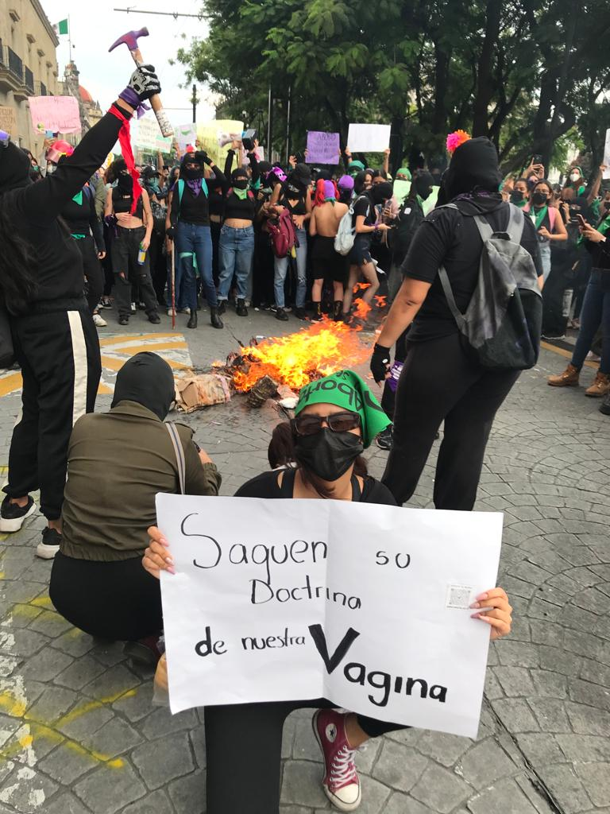

Deconstruyendonos radicalmente
HABLEMOS DE FEMINISMO CON PERSPECTIVA RADICAL
Hola es un gusto que nos leas por aca, es un gusto poder tenerte en este espacio. En Mexico cada dia hay 10 feminicidios, nos han criado con demasiada misoginia incluso algunas veces nos han asustado desde infantes y es por eso que existe este espacio, en donde puedes encontrar informacion que te puede ayudar o si quieres inciar una hermosa y exitosa deconstruccion, que te recuerdo que nunca es tarde para ser una radfem y cuestionar todas esas acciones que tal vez no estaban del todo correctas.
No estas sola.

Hablar desde una PERSPECTIVA radical nunca ha sido sencillo, tiene demasiados
discursos de odio y de privilegio, es por ello que dejare informacion visual y auditiva
en la cual podamos entender que es realmente la rama radical.
Y asi ver si tu consideras que es una rama en la cual te identificas.
Cada sabado se hacen protestas enfocadas en RADFEM, en el parque rojo
y ahi cada una de las que pertenece aprende muchisimo con tan solo asistir